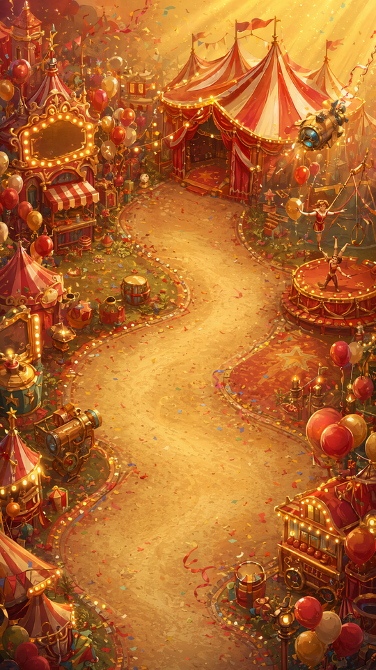
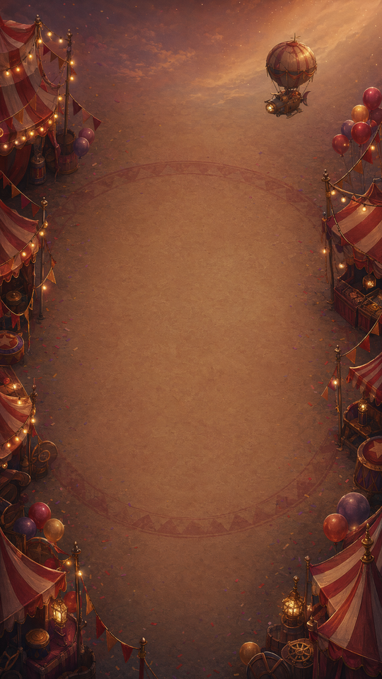
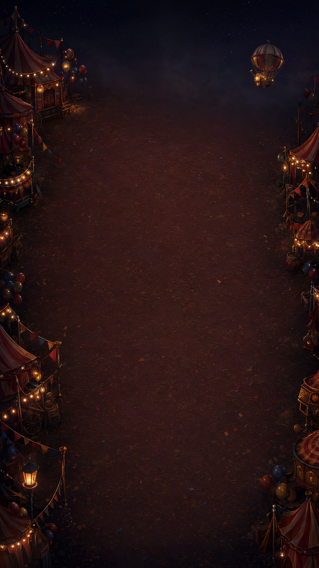

现版（线上）背景抢戏

中间被蜿蜒小路 + 帐篷 + 马车塞满；明度比 UI 还高；红金 ↔ 棋盘红金同色系，地块糊进背景。
方案 A暖沙空场 · 主图中央留空

天空占比大，标题区更透气；边缘物件密、灯串多，节日感强。
方案 A-alt暖沙空场 · 备选留白最大

空场面积最大、边缘更克制；热气球更明确。整体最干净，但节日热闹度略低于 A。
方案 B夜场压暗对比最强

夜晚暗场，中央深红土场，边缘暖灯自发光。跟红金棋盘的明度差最大，地块最跳。
代价：整体偏暗，跟其他马戏节背景的白天调子差最远。